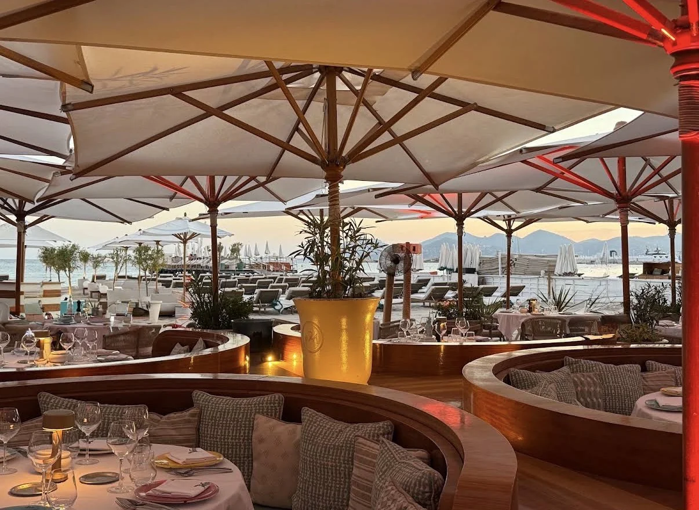

Restaurant & plage · Cannes
L'âge d'or de la French Riviera, les pieds dans le sable. Une cuisine festive et solaire, face à la Méditerranée.

Notre histoire
Vendeuse de fleurs dans les nuits parisiennes, chanteuse à l'esprit vif, puis reine des fêtes cannoises : une femme aux mille vies.
Ses réceptions à la villa Bagatelle étaient légendaires – on y dansait, on y riait, on y vivait. La Môme Plage fait revivre cet esprit : le faste et l'élégance de la Riviera, une cuisine généreuse et un service attentif.
Une journée à La Môme
La carte
Produits de la mer, viandes d'exception, pâtes à la truffe et desserts à partager – la carte de la saison.
Prix nets · Service compris · La Môme Plage n'accepte pas les chèques. Carte susceptible d'évoluer selon la saison.
Midô · Cannes
L'esprit de la rue Florian s'invite à la plage : nigiris, sashimis et rolls signature – du saumon-avocat au Royal truffe.
Voir les sushi →Galerie
Réserver
La Môme Plage accueille sur réservation. Envoyez-nous votre demande, nous vous confirmons rapidement.